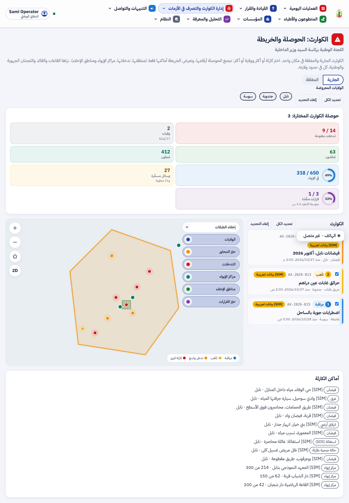
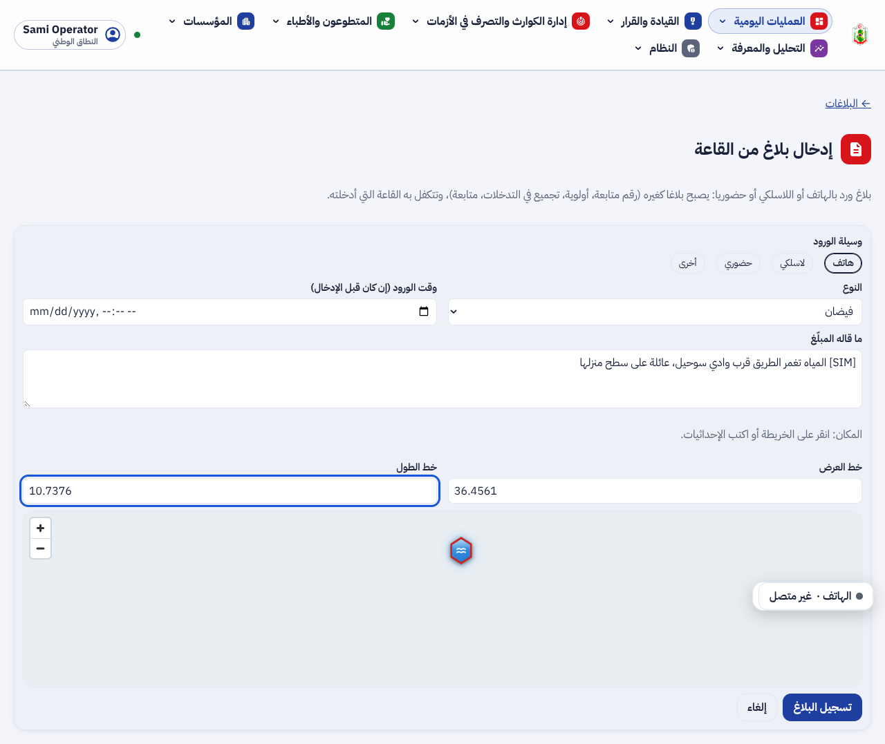
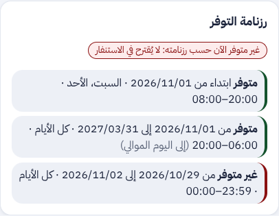
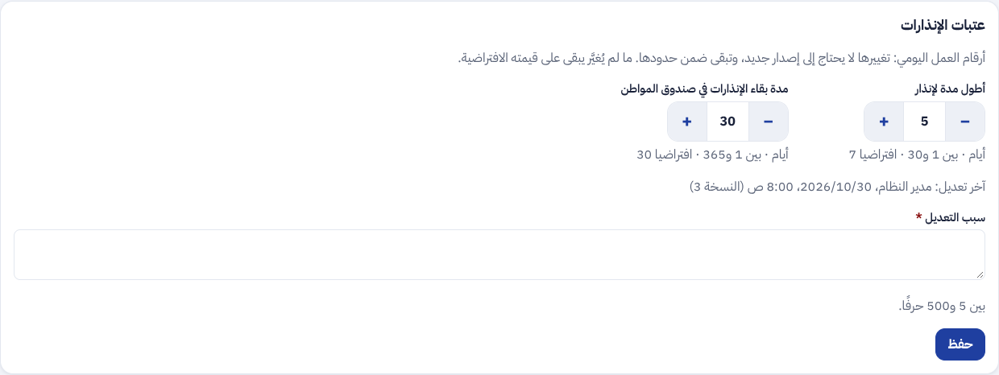

تقرير المرحلة N: عمل القاعات واللجان وإدارة الكوارث. اللجنتان بدل الوالي والوزير، واجهة الكوارث المستقلة، رفع التدخل إلى كارثة، بلاغ القاعة، عدة ولايات و«ماذا ثم أين»، رزنامة التوفر، والعتبات التشغيلية إعدادا.
/disasters): الجارية والمغلقة بخلاصتها، عدة ولايات وعدة كوارث، الأرقام المجمّعة، وخريطة بأماكن الكوارث المختارة وحدها.اللجنة الوطنية في واجهة الكوارث: ثلاث كوارث مختارة، أرقامها المجمّعة، وأماكنها على الخريطة:

القاعة تُدخل بلاغا وصلها بالهاتف:

رزنامة متطوع كما تراها القاعة: غائب الآن، فلا يُقترح في الاستنفار:

عتبات الإنذارات في صفحة الإعدادات، بحدود كل رقم وقيمته الافتراضية:

| البند | الحالة | التقدم |
|---|---|---|
| FR-N-01 اللجنتان بدل الوالي والوزير (F-DSH-108) | منجز | |
| FR-N-02 و 03 واجهة الكوارث للجان (F-DSH-107، F-SRV-48) | منجز | |
| FR-N-04 رفع تدخل إلى كارثة (F-DSH-109) | منجز | |
| FR-N-05 بلاغ القاعة (F-DSH-110، F-SRV-49) | منجز | |
| FR-N-06 إلى 08 عدة ولايات و«ماذا ثم أين» وصلاحيات الطبقات (F-DSH-111) | منجز | |
| FR-N-09 رزنامة التوفر (F-APP-147، F-SRV-50) | منجز | |
| FR-N-10 العتبات التشغيلية (F-SRV-51، F-DSH-112): 16 عتبة | منجز للدفعة الأولى | |
| بقية أرقام التشغيل في الشيفرة | على دفعات مع المراحل التالية |
تقدم المرحلة N: 100%. تُنقل بقية أرقام التشغيل إلى الإعداد على دفعات.
| المكوّن | العدد | النتيجة |
|---|---|---|
| الخلفية (pytest) | 1130 (وتخطّي 2)، منها test_availability.py و test_room_intake.py و test_settings.py | كلها ناجحة على قاعدة جديدة |
| الترحيلات | صعودا ونزولا ثم صعودا حتى 0083 | ناجحة |
| لوحة القيادة (vitest) | 626، منها Disasters و RoomReport و VolunteerDetailPage و SettingsPage | كلها ناجحة |
| لوحة القيادة (Playwright مع axe) | 98، منها phase-n.spec.ts | كلها ناجحة |
| تطبيق الهاتف (flutter test) | availability_flow_test.dart، ومسارات المتطوع والطبيب وفحص النفاذ (125) | ناجحة، وflutter analyze دون ملاحظة |
ruff و mypy و eslint و tsc، و OpenAPI و ERD | — | لا ملاحظة |
لا أداة جديدة في هذه المرحلة. القائمة الكاملة في versions.md.
0082 و 0083 · 1
identity.availability_slot و identity.planned_statealembic upgrade head570 مسارا · 689 عملية · 2
/staff/crisis/disasters/map و POST /staff/reports و /me/availability و /staff/layers/{key}/features?q=spec/: F-DSH-107 إلى 112 و F-SRV-48 إلى 51 و F-APP-147، 570 مسارا و689 عملية، 83 ترحيلا، الاختبارات، وخارطة الطريق.diagrams/: واجهة الكوارث (7e) وبلاغ القاعة (7f) ورزنامة التوفر والاستنفار (7g)، وأربع حالات استعمال للقاعات واللجان، وحالة الرزنامة للمتطوع والطبيب، وصنف «فترة التوفر»، والفاعلان «اللجنة الجهوية» و«اللجنة الوطنية».presentation/: 50 مرحلة، الاختبارات، وخارطة الطريق.screens/n/، والقائمة المؤجلة (§3.10).local_committee و central_committee)، فلا ترحيل للحسابات.الدمج، ثم المرحلة 2 (SNACR)، ثم التطبيق والعرض، ثم الوثائق والأمن وكراس الشروط، ثم وثائق الإنتاج، ثم دراسة اللجنة وأسئلتها.